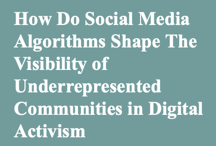

Research Question
How do platform algorithms shape the visibility of underrepresented communities in digital activism?
RESEARCH
My research interests connect UX, sociology, digital ethics, privacy, and the unequal effects of platform design.

QUALITATIVE RESEARCH · DIGITAL ETHICS · 2026
A qualitative research proposal examining how social media algorithms may amplify or suppress activist content from underrepresented communities.
How do platform algorithms shape the visibility of underrepresented communities in digital activism?
Platforms can influence whose voices are amplified, ignored, or treated as risky without making those decisions transparent.
Digital ethnography across TikTok, Instagram, and X, along with semi-structured interviews.
Informed consent, anonymity, secure storage, participant risk, and careful handling of sensitive experiences.
SOCIOLOGICAL LENS
Which communities receive attention, credibility, and reach?
How do platforms, institutions, and designers shape participation?
How do users change behavior when systems feel unpredictable or unfair?
Whose privacy, safety, and consent are prioritized in research and design?